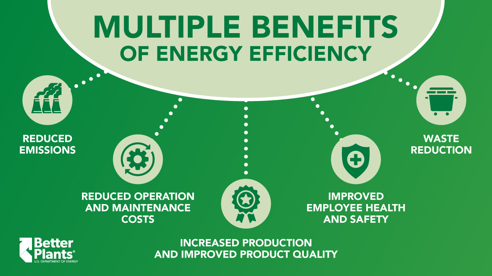
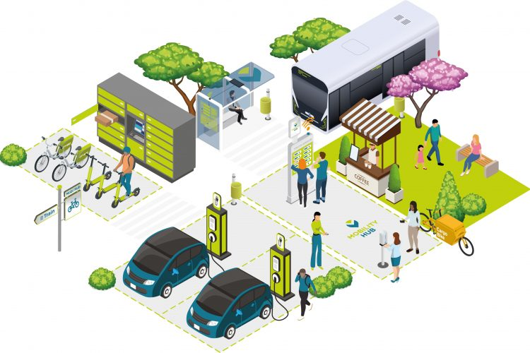
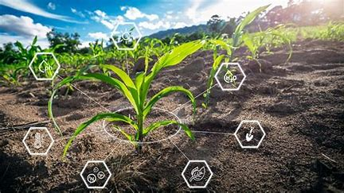
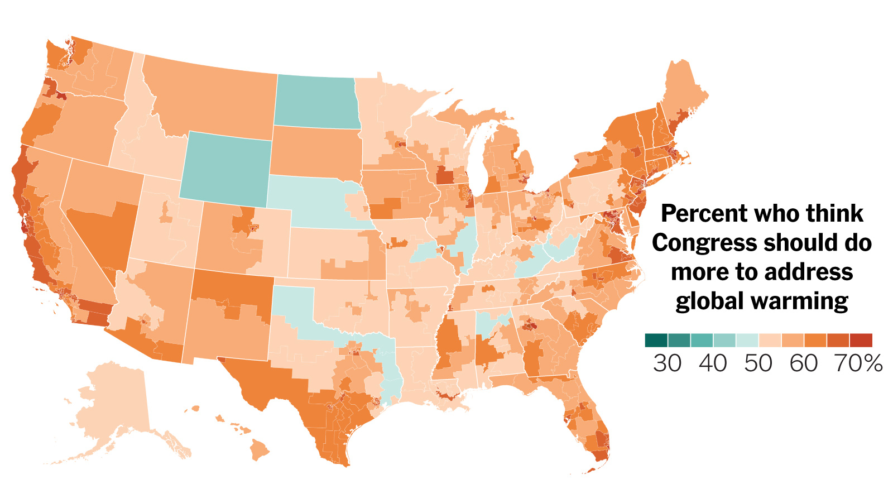
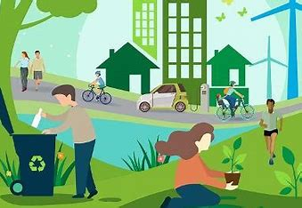

Reduce Fossil Fuel Use
Fossil fuels like coal, oil, and natural gas release carbon dioxide (CO₂) into the atmosphere, worsening climate change. Investing in renewable energy—such as solar, wind, and hydropower—reduces dependence on these fuels. Governments can support this transition by subsidizing clean energy and phasing out fossil fuel projects. Transitioning to renewable energy significantly cuts greenhouse gas emissions, slowing the rate of global warming. Countries that invest in solar and wind energy see cleaner air and reduced reliance on nonrenewable resources.
Improve Energy Efficiency
Homes and businesses waste a lot of energy. Switching to LED bulbs, using smart thermostats, and insulating buildings can significantly reduce energy consumption. Industries can also adopt low-energy manufacturing processes to cut emissions while maintaining productivity. Efficient buildings and appliances use less electricity, meaning less fossil fuel burning. This reduces air pollution and saves money for consumers and businesses.
Sustainable Transportation
The transportation sector is one of the largest contributors to carbon emissions. Electric vehicles (EVs), biking, walking, and public transit all help lower emissions. Cities can develop better infrastructure for EV charging stations, bike lanes, and reliable public transport. Switching to electric vehicles (EVs) or public transit lowers harmful emissions and improves urban air quality. Cities with strong public transport systems report fewer respiratory diseases caused by pollution.
Protect and Restore Forests
Forests act as natural carbon absorbers, removing CO₂ from the air. Cutting down trees for agriculture and urban development accelerates climate change. Reforestation programs, sustainable logging practices, and enforcing stricter anti-deforestation laws can preserve natural carbon sinks and protect biodiversity. Trees naturally absorb CO₂, helping to balance greenhouse gas levels. Preserving forests also safeguards biodiversity and prevents desertification.
Adopt Sustainable Agriculture
Industrial farming contributes to deforestation, water pollution, and greenhouse gas emissions. Solutions include regenerative agriculture, which focuses on restoring soil health, reducing fertilizer use, and growing crops sustainably. Reducing meat consumption also helps, as livestock farming produces large amounts of methane. Sustainable farming methods improve soil health, boost crop yields, and reduce methane emissions from livestock. This approach also makes food production more resilient to climate impacts.
Political and Corporate Action
Climate change solutions require global cooperation. Governments need to pass climate-friendly policies, such as carbon taxes and emissions regulations. Companies must be held accountable for their environmental impact, and consumers can demand sustainable practices by supporting eco-friendly businesses. Government regulations and corporate sustainability initiatives drive large-scale reductions in emissions. Countries that enact carbon taxes often see industries shifting toward greener practices.
Individual Actions
While systemic change is crucial, small daily habits can collectively make a difference. Recycling, reducing plastic use, conserving water, and choosing eco-friendly products are practical ways individuals can contribute. Educating others and advocating for climate action amplifies impact. Personal lifestyle changes, such as reducing waste and conserving energy, contribute to widespread awareness and demand for environmental policies. When millions of people make eco-conscious choices, businesses and governments respond.